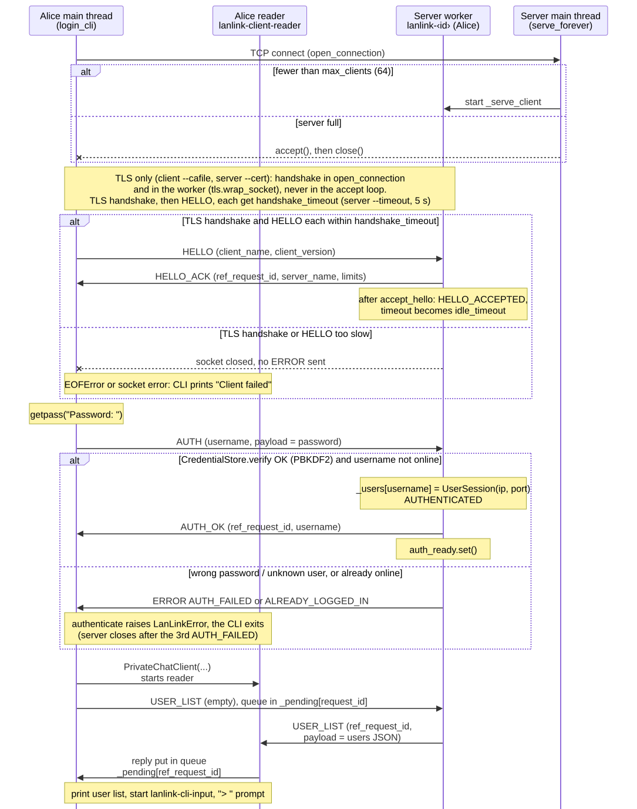
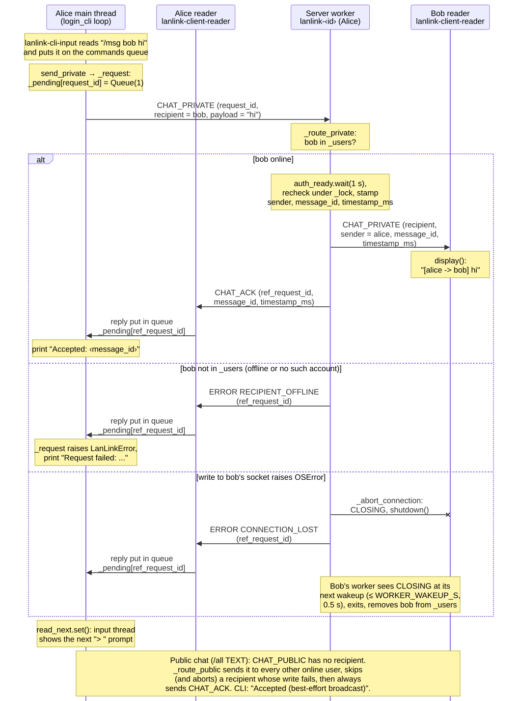
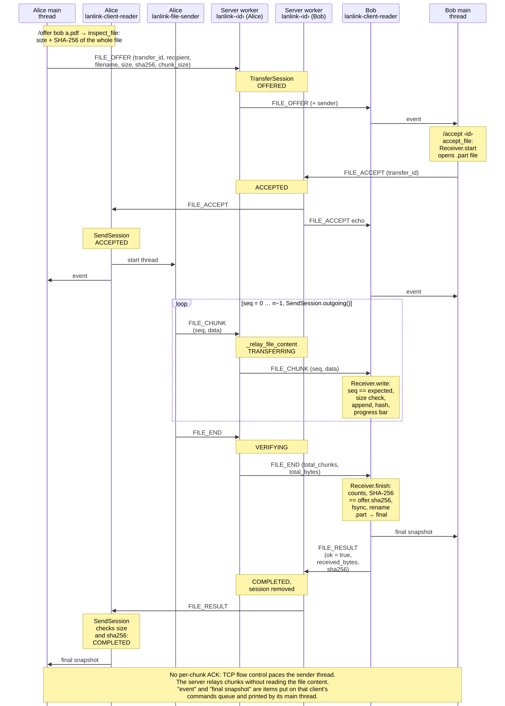
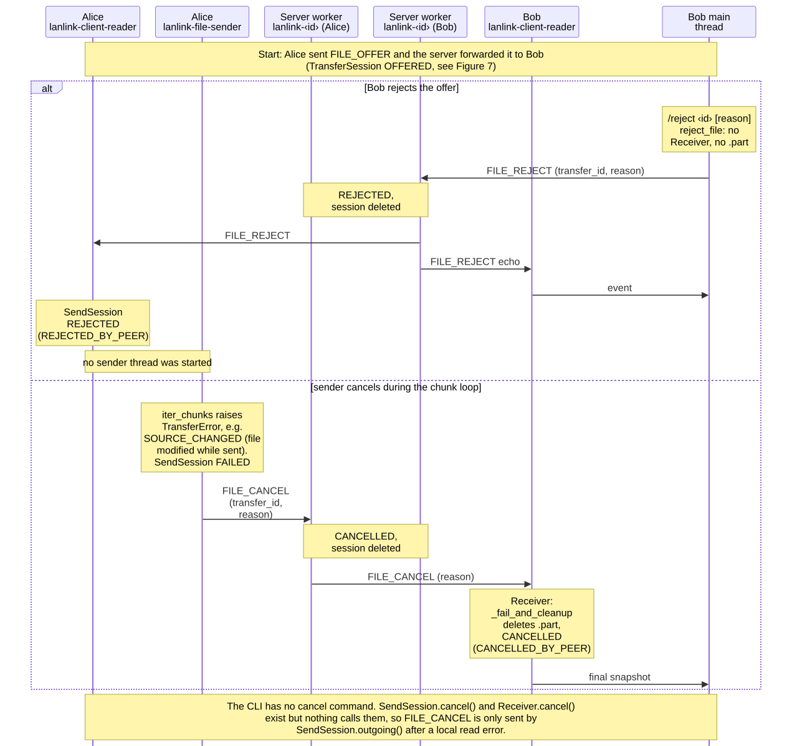
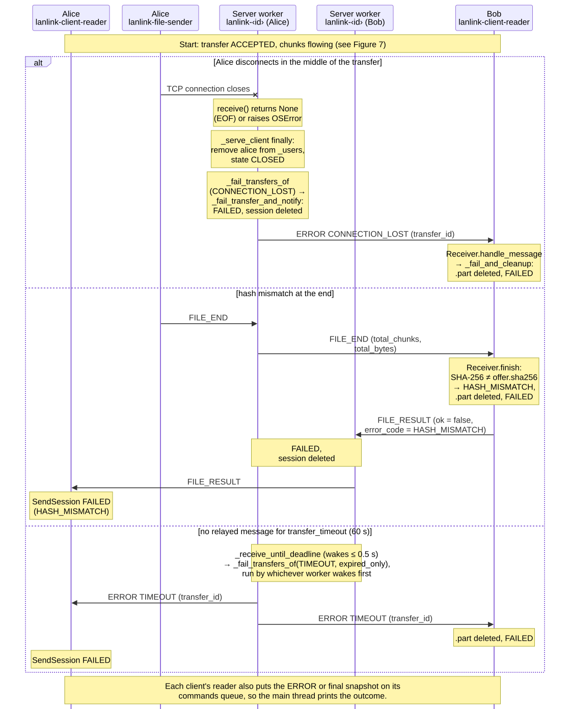

This section follows a chat message and a file transfer through the system. In Figures 5 to 9 one lifeline is one thread, not one host. The interface annotations show the CLI: each CLI client has main, keyboard and reader threads, plus a temporary file sender (Table 2, Section 1.3.1). The GUI uses the same network messages, with Tk callbacks instead of typed commands and queued rendering instead of reader-thread printing. The server has one main accept thread and one worker per client, with no central router thread. The worker of the connection that sent a message writes the forwarded copy straight into the recipient's socket; a write lock per socket keeps this frame from interleaving with the recipient worker's own replies. Error codes are listed in Table 10 (Section 2.5), limits and timeouts in Table 11 (Section 2.6.1), and the connection and transfer states in Figures 3 and 4.
Figure 5 shows how a client connects, logs in and fetches the first user list.
HELLO, the worker answers HELLO_ACK, and the connection becomes
HELLO_ACCEPTED.AUTH with the username in the header and the password in the payload.AUTHENTICATED and
replies AUTH_OK; only then may other workers forward messages to this client.USER_LIST, which lists every online
user with IP address and port.The TLS handshake and HELLO each get 5 s; on expiry the server closes the socket without an
ERROR. A bad password gets an ERROR with AUTH_FAILED, and a name already online gets
ALREADY_LOGGED_IN. The CLI then exits; the server itself closes a connection after
three failed logins on one connection. The GUI instead shows an English error in the
login window, closes that failed connection and allows another login attempt.

Figure 6 follows one private message from Alice to Bob using the CLI. In the GUI, Alice selects Bob's conversation and presses Enter; Bob's reader queues the message and the Tk thread renders it in that conversation, or increments its unread count.
/msg bob hi; her client sends CHAT_PRIVATE with a fresh request_id
and recipient = bob, and waits for the reply.AUTH_OK has been sent.sender, a new message_id and the
server's timestamp_ms. A client frame that contains them fails with
SPOOFED_FIELD and the connection is closed (2.6.3).CHAT_ACK to Alice, carrying her
request ID in ref_request_id and the server's message ID and timestamp.CHAT_ACK means "written to Bob's connection", not "read by Bob". If Bob has no session,
Alice gets ERROR RECIPIENT_OFFLINE. If the write to Bob fails, his stream may hold a partial
frame, so the server shuts his socket down (the worker checks state at read-polling
intervals of at most 0.5 s, not a guaranteed exit time) and answers Alice
with ERROR CONNECTION_LOST, as it also does when Bob's AUTH_OK is not out within 1 s.

A public message (/all hi, type CHAT_PUBLIC, no recipient field) is handled differently,
as the note at the bottom of Figure 6 shows. Alice's worker delivers it to each other online
user one by one, closing and skipping any recipient whose write fails. It then always sends
CHAT_ACK, even with no recipients, so this ack only means "accepted" (best effort).
Figure 7 shows a successful CLI transfer: negotiation, chunk stream, verification.
In the GUI, the + button and file picker replace /offer; an Accept/Reject dialog
replaces /accept or /reject. Both call the same PrivateChatClient methods.
/offer bob a.pdf; her client reads the file once for its size and SHA-256
and sends FILE_OFFER with these values, the file name and the chunk size.OFFERED and forwards the offer to
Bob with sender added./accept <id>; his client creates a private temporary .part file and only
then sends FILE_ACCEPT.ACCEPTED and forwards the accept to Alice, whose
reader thread starts a file-sender thread so that the reader stays free.FILE_CHUNK messages of up to 64 KiB with seq = 0 … n−1 and
the raw bytes as payload, then FILE_END with the chunk and byte totals.TRANSFERRING and then VERIFYING.seq and size, appends it to the .part file and
updates a running SHA-256 digest [8].FILE_END, Bob's client checks the counts and the digest against the offer, flushes
the file to disk and renames it to its final name in one atomic step.FILE_RESULT with ok = true; his worker marks the session COMPLETED and
forwards it, and Alice's client checks size and hash once more.There is no per-chunk acknowledgement. TCP already delivers the bytes in order, and its flow
control paces the sender: if Bob reads slowly, the write to his socket blocks Alice's worker,
which stops reading from Alice, whose sender thread then blocks on its own write. Thanks to
the .part file and the final rename, an incomplete or corrupt download never appears under
the real name.

Figure 8 shows the two deliberate stops.
FILE_REJECT is forwarded to Alice, the session ends REJECTED, and no
file is opened and no sender thread started.FILE_CANCEL is sent only when reading the
source fails mid-transfer (e.g. SOURCE_CHANGED), and Bob's client then deletes its
.part file and ends CANCELLED.
Figure 9 shows the failures nobody chose. In each case the transfer ends FAILED and the
receiver deletes its .part file.
ERROR with CONNECTION_LOST and the transfer ID.FILE_RESULT with
ok = false and HASH_MISMATCH; a wrong seq or chunk size fails the same way at once.ERROR TIMEOUT to both clients.
Every request carries a fresh request_id, and its direct reply, including an ERROR it
causes, repeats that value in ref_request_id. After login the client keeps one waiting
slot per request and the reader thread fills the slot that matches each reply, so
concurrent requests never get each other's answers. An unmatched reply, or no reply within
5 s, closes the connection, and at most 64 requests can wait at once. Chat, file messages
and errors that name a transfer are not replies. The reader dispatches them to the
transfer code or interface callback: the CLI prints chat directly, while the GUI
queues chat and file/progress events for the Tk thread.